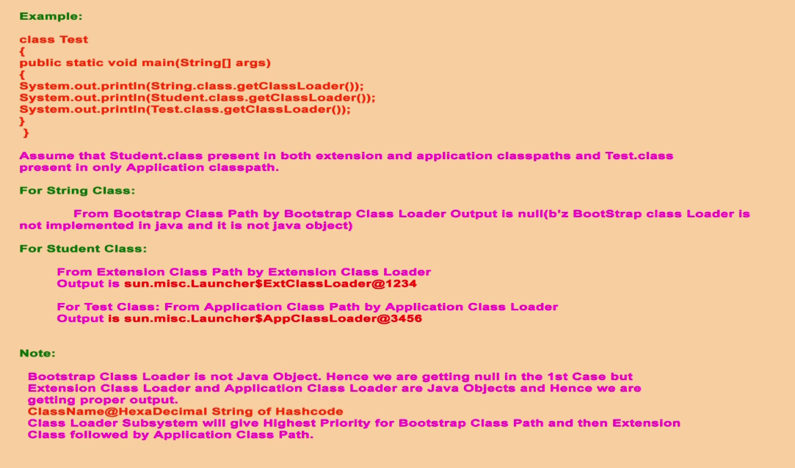

JVM DETAILS
FEATURS OF THE JAVA
- Java is the object oriented language and Everything in java is object expect primitive data types.
- java is plat form independent. we can't use pointers in java.
- java doesn't support to multiple inheritance but it supports multi level single inheritance.
- packages :- packages is nothing but directory structure.
- interfaces :- interfaces are nothing but abstract class types. which can be implement in java class. interfaces are used for dynamic binding.
- JNI (Java Native Interface) :- Is useful to access system resources.
- Exception handling : - is useful to manage the errors run time.
- multi Threading :- It support to execute parallely two parts of execution which functionally depend on each other.
DATA TYPES IN JAVA
- Character Data types :- Char (2 bytes)
- Integer Data types :- int (2 bytes), short (4 bytes), long (8 bytes), byte (1 bytes)
- Floating Data types:- float (4 bytes) , double (8 bytes)
- Boolean Data types:- Boolean (1 bytes)
Note : - All char, int, float, Boolean are primitive data types.
What is Java primitive types and java primitive variables
Answer:- The data types (integer, character, Boolean, float, double) are java primitive types.
default values for primitive data types
Numeric Types = 0
double Types = 0
float Types = 0
Char Types =\u000
Boolean Types= false
Java reference types and java reference variables
Answer : - The data types (classes, arrays) are java reference types.
by default All default values for reference types will be null
What is array : - Array is a collection similar elements.
JVM has stack and heap memory.
Whenever the class is institate or loaded in memory that memory is called JVM.
in JVM has stack and heap memory.
stack memory :- we stores the local variable, order, private references.
heap memory :- we stores the class level variables and objects.
JVM ARCHITECTURE
Computer doesn't understand java code , A micro processor only understand machine language.
Java complier (javac) will compile and will convert the .java file into .class file.
CLASS file is nothing but byte code. we will provide the .class file to JVM (java virtual machine) and
JVM will be responsible to load and execute the java class file. and
.class file access as a input to class loader sub system.
class loader sub system has following three parts.
- LOADING :-
- bootstrap class or primordial loader :- it is responsible to load classes from bootstrap class path.
bootstrap class path is rt.jar (C:\PROGRAM FILES\JAVA\JRE\LIB\RT.JAR ).
bootstrap class means all core java API classes. so bootstrap class loader will be responsible to load All core java API class.
it is also called Native class library.
-
Extension class loader :- It is responsible to load all classes which are located in
C:\PROGRAM FILES\JAVA /JRE/LIB/EXT folders. Extension class loader is java object only and can implements in java program.
-
Application class or System Class loader :- It is responsible to all classes from application level class path.
Note:- first bootstrap class will be load if it gets failed to load or unable to find .class files then Extension class loader will load if it gets failed to load or unable to find .class files then Application class loader will load. After this loading Linking process will start.
- LINKING :-After this loading Linking process will start.
- verify :- here byte code verifier verify the generated (.class) code is proper or not.
if verification gets failed we get the verify error. after that prepare will start.
-
prepare :- it will allocate the memory for static variable and assign it with default values.
-
resolve :- after completing (verification, preparation & initialization) phases it will convert all symbolic references into original references from method Area.
- INITIALIZATION :-
-
Initialization :- It will place the original values to local and static variables and statics block will be executed.
Note :- after initialization class loading will be completed by class loader sub system.
class loader sub system.required some memory areas required to load and execute the java class. for that following memory areas available inside the JVM.
VARIOUS MEMORY AREAS OF THE JVM
- Method Memory Area :- Class level data and static variable will be store in this Area.
- Heap Memory Area:- All object data, instance variables and Every Array in java is object only so Every Array will be stored in this Area.
Note :- for Every JVM one Method Memory Area and one Heap Memory Area will be available.
Heap Memory Area and Method Memory area are the shared memory for multiple threads.
The data which stored in Heap Memory Area and Method Memory area are not thread safe.
because this data can be accessed by multiple threads.
- Stack Memory Area:- For Every Thread a separate run time stack will be created. each method performed by thread will also stored in Stack Memory Area including local variables.
Each entry in stack is called stack frame and stack frame has three parts
- local variable array :- all Locale variable array will store here
- operand stack : - operand stack access workspace to perform the intermediate operation.
- frame data :- it will manages the all exceptions which comes from try & catch block .
Note :- The data which stored in Stack Memory Area are thread safe. because the data can be accessed by a particular thread.
- PC registers Memory Area:- for Every thread a separate PC registers will be created. A whole address of current execution instructions will be managed by PC registers.
- Native Method Stacks Memory Area :- for Every thread a separate Native Method Stacks will be created and it will hold all native method information.
Note :- Heap Area is most important for programmers.
EXECUTION ENGINE
Execution Engine will be responsible to execute the java program, and Execution Engine can communicate with all above Memory areas.
Execution Engine is central component of JVM and it is responsible to execute a program line by line.
Execution Engine has two parts.
-
Interpreter :- Interpreter will responsible to read, Interpret and execute the java program line by line.
when we execute the one java method called multiple time then Interpreter will call every time . that means which methods will repeatedly executes that all methods will be interpreted by interpreter every time.
- JIT complier (Just in Time):- JIT compiles only one time the class code into machine code and next time without Interpreter it executes the code. JIT is important to improve the performance the system.
JIT has following components
- Intermediate code generator :- It produces the Intermediate code.
- Code optimizer :- It is responsible to optimize the Intermediate code.
- Target Code generator : - It is responsible to generate machine code or native code.
- Profiler : - it will know which methods will repeatedly executes , which methods will repeatedly executes that methods called hotspots.
- Garbage collector :- it is used to remove object which goes out of scope means (realising objects). it useful to stop memory leakages .
- Security manager
- Native method Library:- some time Execution Engine required native method library to execute the java program. Java native interface (JNI) will provide all native method libraries.

| Difference between Heap & Stack Memory |
| Heap memory is used by all the parts of the application whereas stack memory is used only by one thread of execution. |
| Whenever an object is created, it’s always stored in the Heap space and stack memory contains the reference to it. Stack memory only contains local primitive variables and reference variables to objects in heap space. |
| Objects stored in the heap are globally accessible whereas stack memory can’t be accessed by other threads. |
| Memory management in stack is done in LIFO manner whereas it’s more complex in Heap memory because it’s used globally. Heap memory is divided into Young-Generation, Old-Generation etc, more details at Java Garbage Collection. |
| Stack memory is short-lived whereas heap memory lives from the start till the end of application execution. |
| We can use -Xms and -Xmx JVM option to define the startup size and maximum size of heap memory. We can use -Xss to define the stack memory size. |
| When stack memory is full, Java runtime throws java.lang.StackOverFlowError whereas if heap memory is full, it throws java.lang.OutOfMemoryError: Java Heap Space error. |
| Stack memory size is very less when compared to Heap memory. Because of simplicity in memory allocation (LIFO), stack memory is very fast when compared to heap memory. |
How to compile java file & execute program
Example :- Test.java
javac : - javac Test.java : - using javac command we can compile the java file
java : - java Test : - using java command we can execute the java program.
How to create the jar file
jar -cvf : - jar-cvf testDemo.jar Test.class :- using jar-cvfcommand we can create the jar file.
How to read the profile Java class file.
java p : - javap java.lang.String
JAVA CODING STANDARDS
- Every java program needs package statement should be there.
- packages should be in lowercase.
- Class should be public.
- Class should have meaningful name
- if you are not using any instance variable then you need to declare method as static
- method should have meaningful name
Class: - Class name should be start with uppercase character. Every words starts with uppercase.
interface :- interface name should be start with uppercase character. Every words starts with uppercase.
methods :- methods name should be start with lowercase character. Every words starts with lowercase. camelcase convension
variables :- variables name should be start with lowercase character. Every words starts with lowercase. camelcase convension
constants :- constants name should be in uppercase.
JAVA OPERATORS PRECEDENCE
- Unary operators: [],x++,x--,++x,--x,~,!,new,<type>
- Arithmetic operators: *,/,%,+,-
- Shift operators: >>, >>> <<
- Comparison Operators: <,<=,>,>=, instanceof
- equality operators: ==, !=
- Bitwise operators: &,^,|
- Short circuit operators: && , ||
- Conditional operator: ?:
- Assignment operators: =,+=,-=,*=,.....
Type cast operator
1. Implicit Type casting :-
Example : - int="a";
System.out.println(a);
output=97
Internaly compiler convert char("a") to integer automatically by implicit typecasting.
This type of casting is called implicit typecasting.
double d=10;
System.out.println(d);
output=10.00;
internally compiler convert integer (10) value to double automatically by implicit typecasting.
(keep small value in big container) is also called (widening or upcasting) implicit typecasting is also called
no loss of imformation is called implicit typecasting is also called.
smaller datatype value converts to bigger data type value is called implicit typecasting.
1. byte datatype converts to short datatype is called implicit typecasting.
2. short dattype converts to int datatypes is called implicit typecasting.
3. int datatype converts to long datatypes is called implicit typecasting.
4. long datatype converts to double datatypes is called implicit typecasting.
5. char datatype convets to int datatypes is called implicit typecasting.
2. Explicit Type casting :-
some type casting done by programmer is called explicit type casting.
Example:
int x=10;
byte b=(byte) x; :- explicit typecasting.
Whenever we are assigning bigger datatype value to smaller dattype varible that time explicit type casting is required.
There is chance of loss of imformation while explicit typecasting.
(keep big value in small container) is also called (narrowing or downcasting) while explicit typecasting .